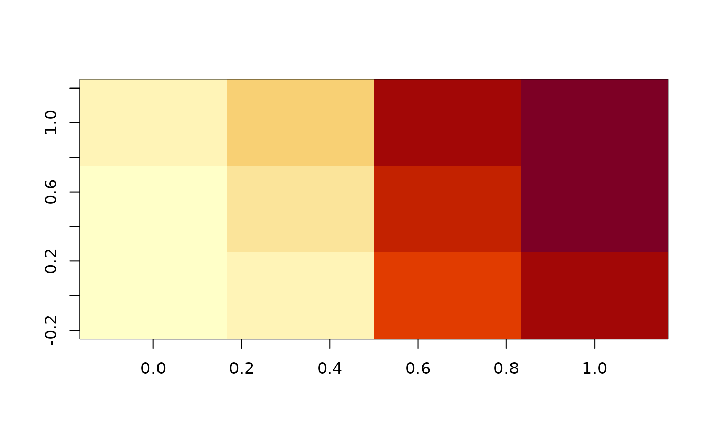

Functions 'bottom left', 'top left', 'bottom right', and 'top right' named by their initials, provide very low level relative positional structures for use in raster logic. These are used to traverse the divide left by area-based rasters which are inherently a discrete value across a finite element. If we want that element as part of a continuous surface we need to find local relative values for its corners. Used in quadmesh and anglr packages, and useful for calculating neighbourhood values.
bl(x)
tl(x)
br(x)
tr(x)
la(x)
ta(x)
ra(x)
ba(x)
image0(x, ...)
image1(x, ...)
text0(x, ...)matrix
arguments passed to image()
matrix, padded by one row and one column relative to input
bl, tl, br, and tr originally lived in affinity
(m <- matrix(1:12, 3))
#> [,1] [,2] [,3] [,4]
#> [1,] 1 4 7 10
#> [2,] 2 5 8 11
#> [3,] 3 6 9 12
tl(m)
#> [,1] [,2] [,3] [,4]
#> [1,] NA 2 5 8
#> [2,] NA 3 6 9
#> [3,] NA NA NA NA
tr(m)
#> [,1] [,2] [,3] [,4]
#> [1,] 5 8 11 NA
#> [2,] 6 9 12 NA
#> [3,] NA NA NA NA
bl(m)
#> [,1] [,2] [,3] [,4]
#> [1,] NA NA NA NA
#> [2,] NA 1 4 7
#> [3,] NA 2 5 8
br(m)
#> [,1] [,2] [,3] [,4]
#> [1,] NA NA NA NA
#> [2,] 4 7 10 NA
#> [3,] 5 8 11 NA
tl(br(m))
#> [,1] [,2] [,3] [,4]
#> [1,] NA 4 7 10
#> [2,] NA 5 8 11
#> [3,] NA NA NA NA
image0(tl(br(m)))
text0(tl(br(m)))
## this gives neighbours in adjacent positions
m <- matrix(1:12, ncol = 3, byrow = TRUE)
matrix(c(t(la(m)), t(ta(m)), t(ra(m)), t(ba(m))), ncol = 4)
#> [,1] [,2] [,3] [,4]
#> [1,] NA NA 2 4
#> [2,] 1 NA 3 5
#> [3,] 2 NA NA 6
#> [4,] NA 1 5 7
#> [5,] 4 2 6 8
#> [6,] 5 3 NA 9
#> [7,] NA 4 8 10
#> [8,] 7 5 9 11
#> [9,] 8 6 NA 12
#> [10,] NA 7 11 NA
#> [11,] 10 8 12 NA
#> [12,] 11 9 NA NA
## this gives neighbours in all 8 adjacent and diagonal positions
image(matrix(rowMeans(matrix(c(t(la(m)), t(ta(m)), t(ra(m)),
t(ba(m)), t(bl(m)), t(tl(m)), t(br(m)), t(tr(m))), ncol = 8), na.rm = TRUE),
4, byrow = TRUE))
